Vector Terminal Snapshots
& SVG Screenshots
Render pixel-perfect, lossless vector SVGs from terminal commands, live screen buffers, ANSI streams, and tmux panes. Styled with native macOS window chrome, themes, and automatic secret masking.
brew install smford/tap/termtosvg

Installation Methods
Install termtosvg via Homebrew, pre-compiled multi-arch binaries, Docker, or directly with Go.
For macOS and Linux users with Homebrew installed:
# Tap and install via Homebrew
brew install smford/tap/termtosvg
# Verify installation
termtosvg -versionRequires Go 1.24+ installed on your system:
# Install globally using Go
go install github.com/smford/terminal-to-svg/cmd/termtosvg@latest
# Verify binary is in your $GOPATH/bin or $PATH
termtosvg -versionRun without installing Go or local dependencies using our signed GHCR image:
# Pull and run the container
docker run --rm -i ghcr.io/smford/terminal-to-svg:latest -version
# Pipe command logs from host into container
git status | docker run --rm -i ghcr.io/smford/terminal-to-svg:latest -o - -auto-crop > status.svgDownload statically linked binaries signed with Cosign from GitHub Releases:
# macOS (Apple Silicon arm64)
curl -sLO https://github.com/smford/terminal-to-svg/releases/download/v0.1.0/terminal-to-svg_0.1.0_darwin_arm64.tar.gz
tar -xzf terminal-to-svg_0.1.0_darwin_arm64.tar.gz && sudo mv termtosvg /usr/local/bin/
# Linux (x86_64 amd64)
curl -sLO https://github.com/smford/terminal-to-svg/releases/download/v0.1.0/terminal-to-svg_0.1.0_linux_amd64.tar.gz
tar -xzf terminal-to-svg_0.1.0_linux_amd64.tar.gz && sudo mv termtosvg /usr/local/bin/
# Linux (ARM64)
curl -sLO https://github.com/smford/terminal-to-svg/releases/download/v0.1.0/terminal-to-svg_0.1.0_linux_arm64.tar.gz
tar -xzf terminal-to-svg_0.1.0_linux_arm64.tar.gz && sudo mv termtosvg /usr/local/bin/Clone the repository and compile with Make:
git clone https://github.com/smford/terminal-to-svg.git
cd terminal-to-svg
make build
# Compiled binary is at ./bin/termtosvg and ./termtosvg
./termtosvg -versionVisual Gallery & Themes
Crisp vector SVGs rendered directly with termtosvg, demonstrating built-in themes, secret redaction, and multi-tab chrome.

Compact Auto-Crop with Blinking Cursor
Automatically calculates bounding boxes of visible content to eliminate blank whitespace around terminal commands.
git status | termtosvg -o status.svg -title "git status" -auto-crop -cursor
Catppuccin Theme & Pixel-Perfect Unicode Grid
Renders Unicode box drawing characters (U+2500–U+257F) with explicit x coordinates to ensure clean alignment on all screens.
kubectl get pods | termtosvg -theme catppuccin -tabs "Workloads,Pods" -active-tab 1 -auto-crop
Nord Slate Theme & SRE Production Matrix
Arctic palette designed for SRE dashboards, including custom status badges (-badge) and subheader titles (-header).
termtosvg -theme nord -title "SRE Dashboard" -header "SLO Latency" -badge "ON-CALL: ACTIVE"
Light Theme for Whitepapers & Print
High-contrast daylight theme designed specifically for light-mode documentation, print publications, and blog posts.
curl -i https://api.internal/metrics | termtosvg -theme light -badge "STATE: HEALTHY" -auto-crop
Automated Secret Redaction Engine
Using -mask-secrets automatically detects and redacts IPv4/IPv6 addresses, Bearer tokens, passwords, and JWT credentials before rendering.
cat auth.log | termtosvg -mask-secrets -title "Sanitized Audit" -badge "SANITIZED: TRUE"
Frameless Mode for Clean README Embeds
Omits the top macOS window controls and titlebar entirely, creating sleek, modern code callout cards.
curl -s https://api.io/health | termtosvg -theme frameless -auto-crop4 Flexible Usage Modes
Snapshot live terminal windows, execute subprocesses in virtual PTYs, pipe ANSI logs, or capture tmux sessions.
1. Live Screen Snapshot
Capture exactly what is visible in your active terminal window right now:
# Capture the open terminal window
termtosvg -o screenshot.svg -auto-crop2. Execute Command in Virtual PTY
Spawn a command inside a virtual pseudo-terminal and capture its final frame:
# Run htop/top or any CLI tool
termtosvg -o top.svg -- top -b -n 13. Stdin ANSI Pipeline
Pipe colored output directly from standard input for seamless shell scripting:
# Stream logs or build output
cat deploy.log | termtosvg -o deploy.svg -theme nord4. Tmux Pane Capture
Target specific tmux windows or background pane IDs cleanly:
# Capture current or designated tmux pane
termtosvg -tmux "%1" -o pane.svgCI/CD Pipeline Automation
Embed live visual build artifacts, test matrices, and security compliance badges directly into PRs and documentation.

GitHub Actions Workflow Example
Generate an SVG verification badge on every push and attach it as a downloadable build artifact:
name: CI & Visual Artifact
on: [push, pull_request]
jobs:
test:
runs-on: ubuntu-latest
steps:
- uses: actions/checkout@v4
- uses: actions/setup-go@v5
with:
go-version-file: 'go.mod'
- name: Install termtosvg
run: go install github.com/smford/terminal-to-svg/cmd/termtosvg@latest
- name: Run Tests & Capture Visual Matrix
run: |
go test -v ./... 2>&1 | termtosvg \
-o docs/test-report.svg \
-title "Go Test Suite — GitHub Actions" \
-header "Automated Test Matrix" \
-badge "STATUS: PASSED" \
-auto-crop
- name: Upload Report SVG
uses: actions/upload-artifact@v4
with:
name: visual-test-report
path: docs/test-report.svgEnterprise DevSecOps Standards
Built with zero-trust supply chain security and verified with modern scanning tools.
| Security Layer | Tool / Mechanism | Protection Benefit |
|---|---|---|
| Static Analysis (SAST) | GitHub CodeQL + Semgrep OSS | Semantic taint tracking & vulnerability detection on every PR. |
| Dynamic Analysis (DAST) | OWASP ZAP Baseline Scan | Automated security scan against daemon readiness & health endpoints. |
| Supply Chain Security | OpenSSF Scorecard + Cosign | Full provenance checking and cryptographic signature verification. |
| Secret Leak Protection | Pre-commit hooks & CLI Regex Engine | Stops credential leakage into git history and rendered SVGs. |
| SRE Quality Gates | gh-stats PR blast-radius auditing |
Automated DORA metrics and risk-budget evaluations on pull requests. |